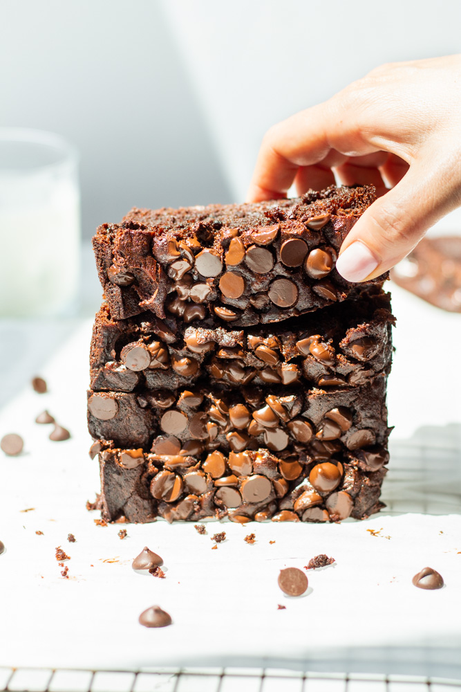

Chocolate Banana Bread

Chocolate comfort
what will happen when we put everyone's favorite snack with their favorite comfort food?
here we are going to tell you about how to make chocolate chips banana bread that will blow your mind
Ingredients
- 1 cup flour
- 1/2 cup cocoa powder
- 1 teaspoon baking soda
- 1 teaspoon salt diamond crystal (1/2 teaspoon if morton)
- 3 large ripe bananas mashed
- 1/2 stick butter melted
- 1/4 cup coconut oil melted (or more butter)
- 3/4 cup sugar
- 1 large egg at room temperature
- 2 teaspoons vanilla extract
- 1 cup dark chocolate chips divide
Instructions
- Preheat the oven to 350°F. Spray a 9×5 inch loaf pan with cooking spray. Set aside
- In a bowl, mix together the flour, cocoa powder, baking soda, and sea salt. Set aside.
- With a fork in a large bowl, mash the bananas. Stir in the melted butter and coconut oil and mix to combine. Add the sugar, egg, and vanilla until smooth.
- Combine the dry ingredients into the wet ingredients, until just mixed. Fold in ¾ cup of chocolate chips.
- Pour batter into the loaf pan. Top with the remaining ¼ cup chocolate chips. Bake the bread for 55-65 minutes, or until a toothpick comes out clean (other than melted chocolate)
- Cool for at least 15 minutes before removing. Cut the bread and enjoy.